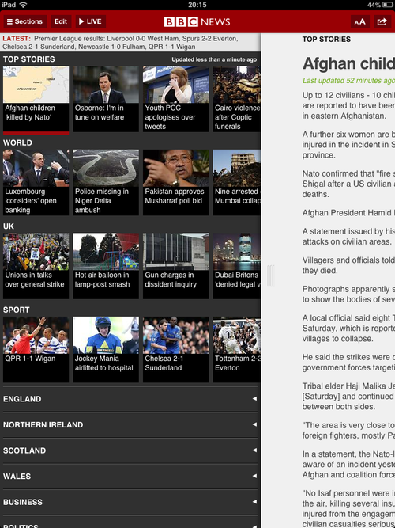
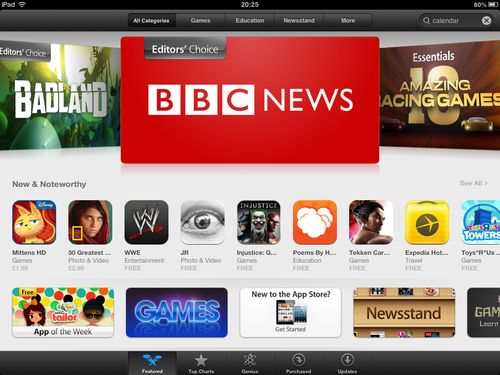

BBC News for iOS 2.0
For just over the last 4 months, I’ve been leading a small team that has been working to update the BBC News App for iPhone and iPad.
This new version went live this week and is a significant update. The App has been re-built from the ground up, allowing for a refreshed UI, and addresses a number of bugs and stability issues with the previous version.
The update also improved the accessibility of the App, ensuring VoiceOver users can navigate the App with ease.
Response to version 2.0 has been overwhelmingly positive:
Rupert Maspero (@rmaspero) BBC’s update to their news app is a huge improvement!https://twitter.com/rmaspero/status/319043775282421760
Lance Andrewes (@lanceanz) Today’s update of BBC News for iOS is a major one. Layout has been revamped, and it’s clearly faster.https://twitter.com/lanceanz/status/316972126756286464
And the iPad App was picked an Editor’s Choice by the App Store:
We have noticed a few niggling issues, that will hope to address with an update soon, but in all a very successful launch, and an App we are proud of.